In this section, I try to visualize gridpoints in the field aligned coordinates. The directions of the covariant basis vectors of (ψ,𝜃,α) coordinates are as follows:
|
| (311) |
 | (312) |
 | (313) |
Here ∂r∕∂ψ|𝜃,α is a combination of the usual radial and toroidal direction, which needs some clarification. Note that, ϕ is related to α by Eq. (299), i.e.,
 | (314) |
(where the second equality becomes exact if 𝜃 is the straight-field-line poloidal angle defined in Sec. 6.4.), which indicates that, for q′(ψ)≠0 and 𝜃≠0, the usual toroidal angle ϕ is changing when changing ψ and holding 𝜃 and α fixed. Figure 16b shows how the usual toroidal angle ϕ changes when we change ψ and hold 𝜃 and α fixed.
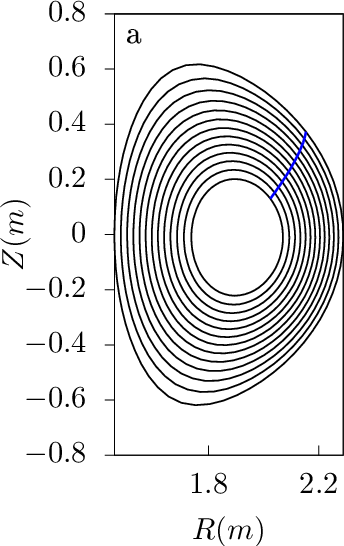 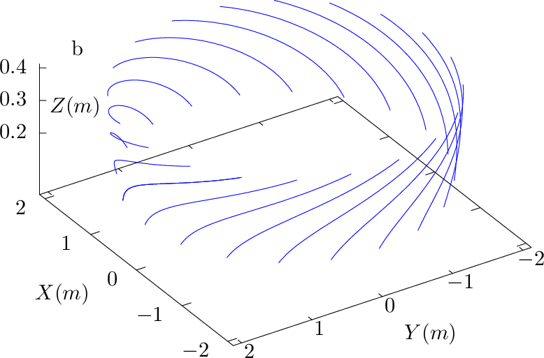
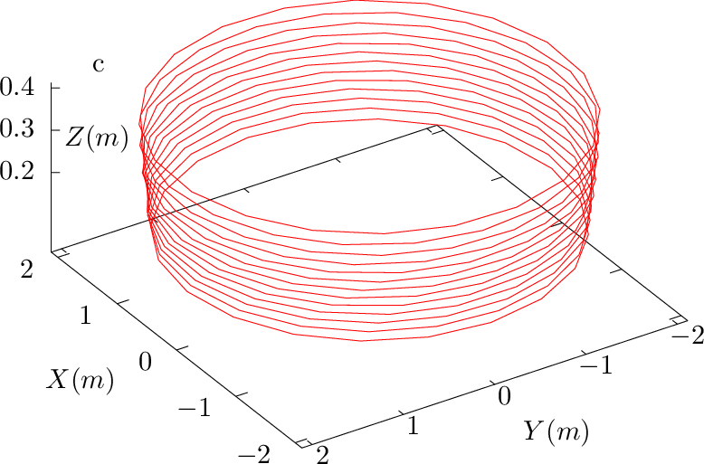 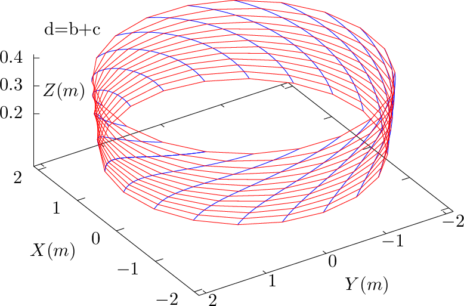
 . (d): Grid on the isosurface of 𝜃 = 9×2π∕63, where the red lines are α coordinate lines
while the blue lines are ψ coordinate lines. Magnetic field from EAST discharge #59954@3.03s.
. (d): Grid on the isosurface of 𝜃 = 9×2π∕63, where the red lines are α coordinate lines
while the blue lines are ψ coordinate lines. Magnetic field from EAST discharge #59954@3.03s.The relation ϕ ≈ α + q(ψ)𝜃 given by Eq. (314) indicates that the toroidal shift along ∂r∕∂ψ|α,𝜃 for a radial change form ψ1 to ψ2 is given by (q(ψ2) − q(ψ2))𝜃, which is larger on 𝜃 isosurface with larger value of 𝜃. An example for this is shown in Fig. 17 for 𝜃 = 19 × 2π∕63, where ∂r∕∂ψ|α,𝜃 has larger toroidal shift than that in Fig. 16 for 𝜃 = 9 × 2π∕63.
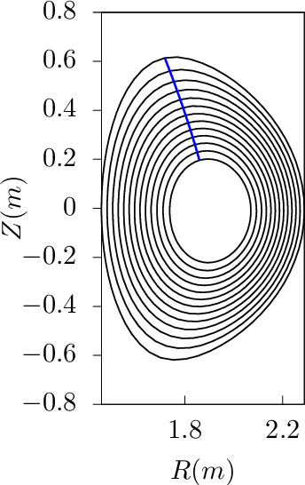 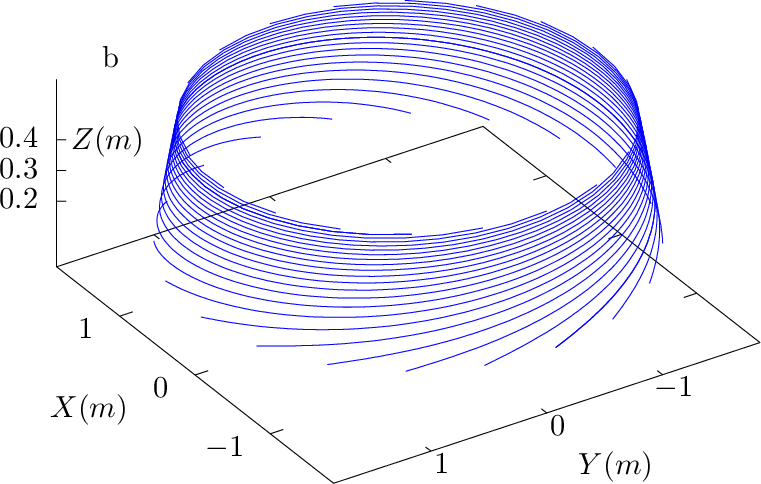
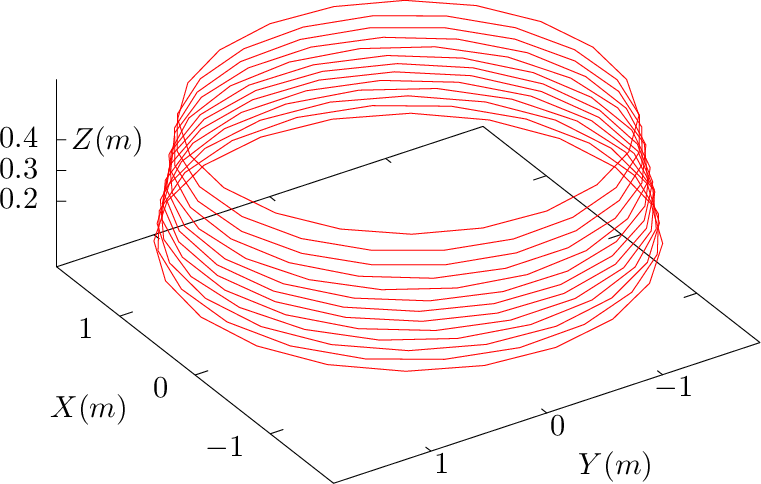 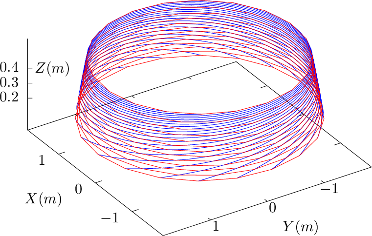
The ∂r∕∂ψ|𝜃,α curves can be understood from another perspective. Examine a family of magnetic field lines that start from 𝜃 = 0 and ϕ = ϕ1 but different radial coordinates. These starting points all have the same value of α, which is equal to ϕ1. When following these field lines to another isosurfce of 𝜃, the intersecting points of these field lines with the 𝜃 isosurface will trace out a ∂r∕∂ψ|𝜃,α line with α = ϕ1. Examine another family of magnetic field lines similar to the above but with the starting toroidal angle ϕ = ϕ2. They will trace out another ∂r∕∂ψ|𝜃,α line (with α = ϕ2) on the 𝜃 isosurface. Continue the process, we finally get those curves in Fig. 16b and Fig. 17b.
For a harmonic in (ψ,𝜃,ϕ) coordinates given by A(ψ,𝜃,ϕ) = exp(ikψψ + im𝜃 + inϕ), the radial wave number is kψ. Let us calculate the corresponding radial wavenumber kψ⋆ in the new coordinates (ψ,𝜃,α), which is defined by
 | (315) |
where the phase is given by phase = kψψ + m𝜃 + nϕ. Then the above expression is written as


Let us examine how many ψ grid points are needed to resolve the ψ dependence in (ψ,𝜃,α) coordinates on the high-field side (𝜃 = π). Assume kψ ≈ 0, then kψ⋆ at 𝜃 = π is given by kψ⋆ = nπq′. The corresponding wave-length is given by λψ⋆ = 2π∕kψ⋆. The grid spacing Δψ should be less than half of this wave-length (sampling theorem). Then the grid number should satisfy that
 | (318) |
where Lψ is the radial width of the computational domain.
The number of Fourier harmonics that need to be included is given by
 | (319) |
For DIII-D cyclone base case, choose the radial coordinate ψ as r. At the radial location ψ = r0 = 0.24m, q0 = 1.4, ŝ0 = 0.78, then q′0 = s0q0∕r0 = 4.5m−1. Then Nr⋆ = n× 0.45 for the radial width Lr = 0.10m.
Figure 18 plots ∂r∕∂ψ|𝜃,α lines on the 𝜃 = 0,2π isosurfaces, which are chosen to be on the low-field-side midplane. On 𝜃 = 0 surface, ∂r∕∂ψ|𝜃,α lines are identical to ∂r∕∂ψ|𝜃,ϕ lines. On 𝜃 = 2π surface, each ∂r∕∂ψ|𝜃,α line has large ϕ shift. In old version of my code, 𝜃 = 0,2π surfaces are chosen as the 𝜃 cuts (in the new version 𝜃 = [−π,π]). A connection condition for the perturbations is needed between these two surfaces. This connection condition is discussed in Sec. 11.5.
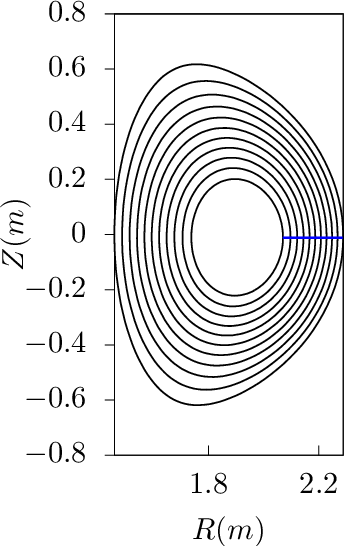 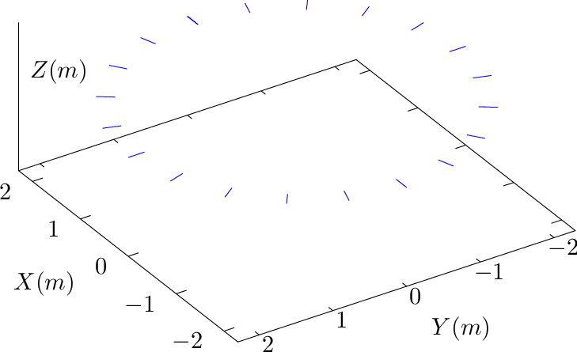
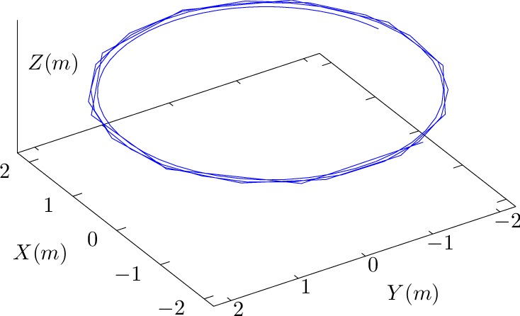
Since (ψ,𝜃,ϕ) and (ψ,𝜃 + 2π,ϕ) correspond to the same spatial point, a real space continuous quantity f expressed in terms of coordinates (ψ,𝜃,ϕ), i.e., f = f(ψ,𝜃,ϕ), must satisfy the following periodic conditions along 𝜃:
 | (320) |
Since (ψ,𝜃,ϕ) and (ψ,𝜃,ϕ + 2π) correspond to the same spatial point, f must satisfy the following periodic conditions along ϕ:
 | (321) |
Since (ψ,𝜃,α) and (ψ,𝜃,α + 2π) correspond to the same spatial point, a real space continuous quantity g expressed in terms of field-line-following coordinates (ψ,𝜃,α), i.e., g = g(ψ,𝜃,α), must satisfy the following periodic condition along α:
 | (322) |
However, generally there is no periodic condition along 𝜃,
 | (323) |
because P1 = (ψ,𝜃,α) and P2 = (ψ,𝜃 + 2π,α) are generally not the same spatial point. In fact, equation (299) implies, for point P1, its toroidal angle ϕ1 is given by
 | (324) |
while for point P2, its toroidal angle ϕ2 is given by
 | (325) |
i.e., ϕ1 and ϕ2 are different by 2πq. From this, we know that (ψ,𝜃,α) and (ψ,𝜃 + 2π,α − 2πq) correspond to the same spatial point. Therefore we have the following periodic condition:
 | (326) |
or equivalently
 | (327) |
For the fully kinetic ion module of GEM code that I am developing, 𝜃 is chosen in the range [0 : 2π]. The condition (327) imposes the following boundary condition:
 | (328) |
If α is on a grid, α + 2πq is usually not on a grid. Therefore, to get the value of g(ψ,0,α + 2πq), an interpolation of the discrete date over the generalized toroidal angle α (or equivalently ϕ) is needed, as is shown in Fig. 19.
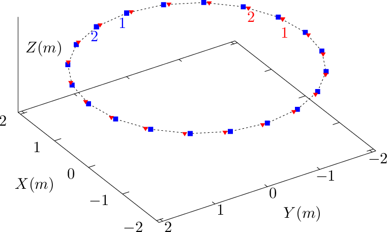
Figure 20 compares a small number of ϕ contours and α contours on a magnetic surface.
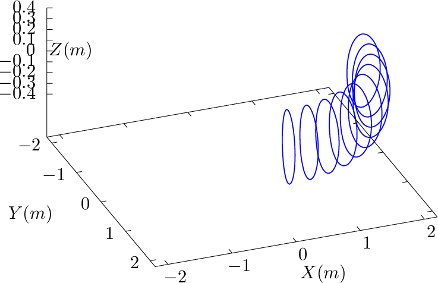 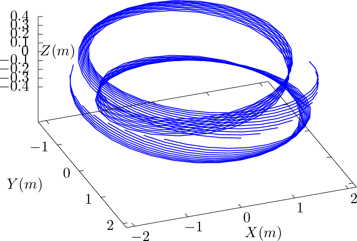
As is shown in the left panel of Fig. 20, with ϕ fixed, an 𝜃 curve reaches its starting point when 𝜃 changes from zero to 2π. However, as shown in the right panel of Fig. 20, with α fixed, an 𝜃 curve (i.e. a magnetic field line) does not necessarily reach its starting point when 𝜃 changes from zero to 2π. There is a toroidal shift, 2πq, between the starting point and ending point. Therefore there is generally no periodic condition along 𝜃 since q is not always an integer. A mixed periodic condition involves both 𝜃 and α is given in (326).
In field-line-following coordinates (ψ,𝜃,α), a toroidal harmonic of a physical perturbation can be written as
 | (329) |
where n is the toroidal mode number, m′, which is not necessary an integer, is introduced to describe the variation along a field line. The periodic condition given by Eq. (326) requires that
![cos(m ′𝜃+ n α+ α0) = cos[m′(𝜃 + 2π)+ n(α− 2πq) +α0 ],](tokamak_equilibrium423x.png) | (330) |
To satisfy the above condition, we can choose
 | (331) |
where N is an arbitrary integer, i.e.,
 | (332) |
We are interested in perturbation with a slow variation along the field line direction (i.e., along ∂r∕∂𝜃|ψ,α) and thus we want the value of m′ to be small. One of the possible small values given by expression (332) is to choose N = −n × NINT((qmax + qmin)∕2), so that m′ is given by
 | (333) |
where NINT is a function that return the nearest integer of its argument, qmax and qmin is the maximal and minimal value of the safety factor in the radial region in which we are interested. [In the past, I choose m′(ψ) = nq − NINT(nq). However, m′(ψ) in this case is not a continuous function of ψ and thus is not physical.] This form is used to set the initial density perturbation in the fully kinetic code I am developing. Note that m′ in Eq. (333) depends on the radial coordinate ψ through q(ψ). Also note that m′ here is different from the poloidal mode number m in (ψ,𝜃,ϕ) coordinate system. It is ready to show that the perturbation given by Eq. (329) with m′∼ 1 and n ≫ 1 has large poloidal mode number m when expressed in (ψ,𝜃,ϕ) coordinates. [Proof: Expression (329) can be written as
![δA = δA0 (ψ )cos[m′𝜃+ n(ϕ − δ(ψ,𝜃))+ α0]](tokamak_equilibrium427x.png) | (334) |
If 𝜃 is the straight-field-line poloidal angle in (ψ,𝜃,ϕ) coordinate system, then δ(ψ,𝜃) = q𝜃 and the above equation is written as
![δA = δA0(ψ)cos[(m ′ − nq )𝜃 + nϕ+ α0],](tokamak_equilibrium428x.png) | (335) |
which indicates the poloidal mode number m in (ψ,𝜃,ϕ) coordinates is given by m = m′−nq. For the case with m′∼ 1 and n ≫ 1, m is much larger than one.]
Since α contours on a magnetic surface are magnetic field lines, they span out the 3D shape of magnetic surface when there are many α contours on a magnetic surface, as is shown by the right-panel of Fig. 21.
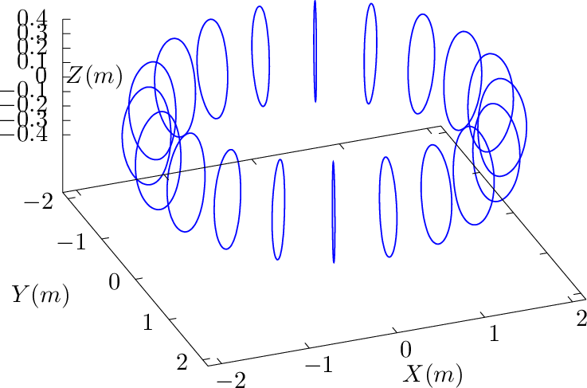 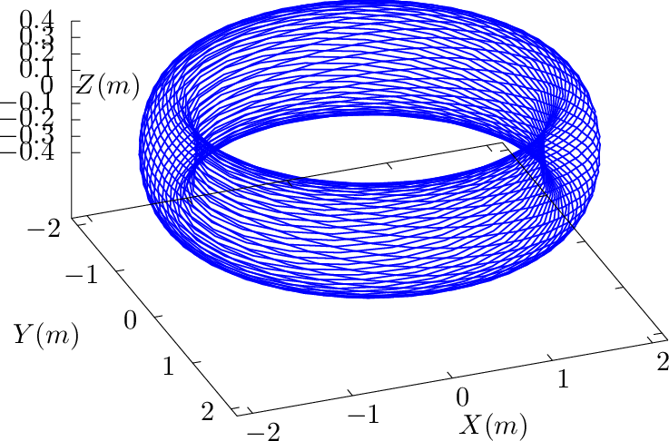
Figure 22 compares the ϕ coordinate surface of (ψ,𝜃,ϕ) coordinates with the α coordinate surface of (ψ,𝜃,α) coordinates.
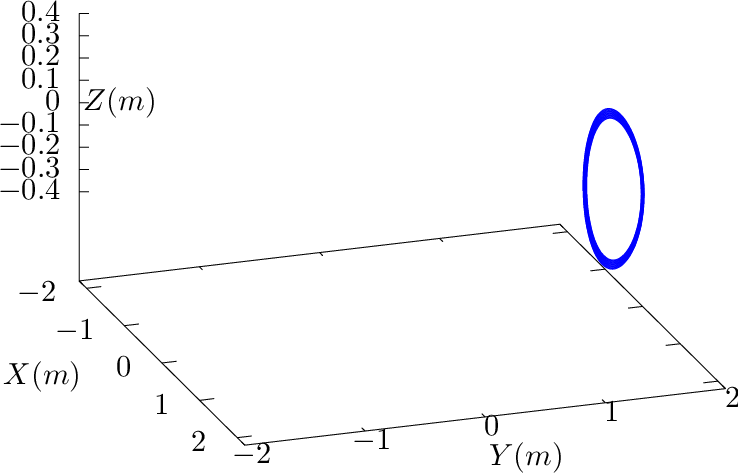 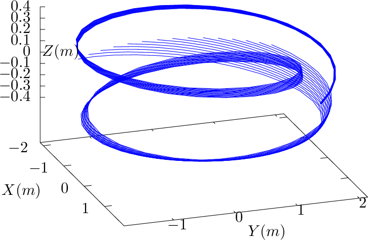
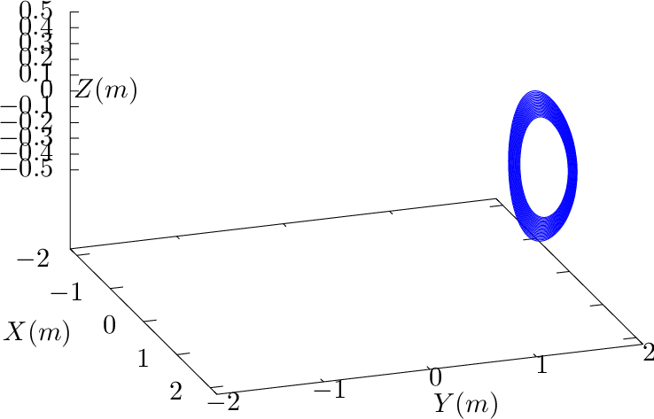 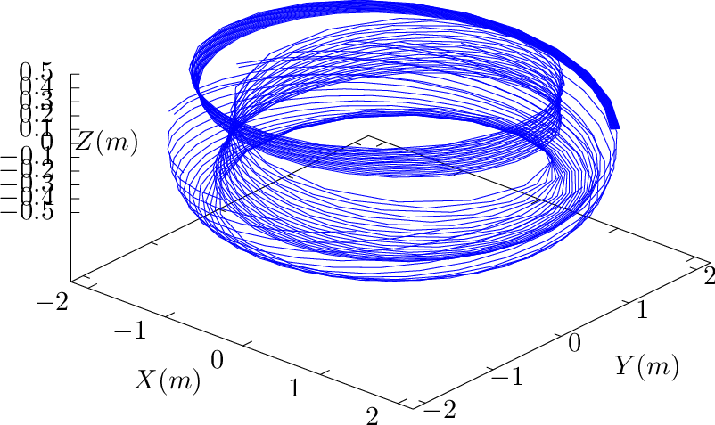
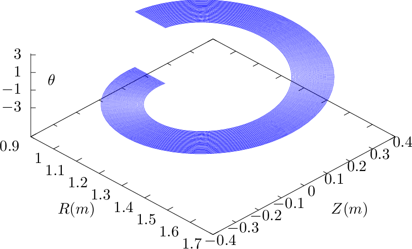 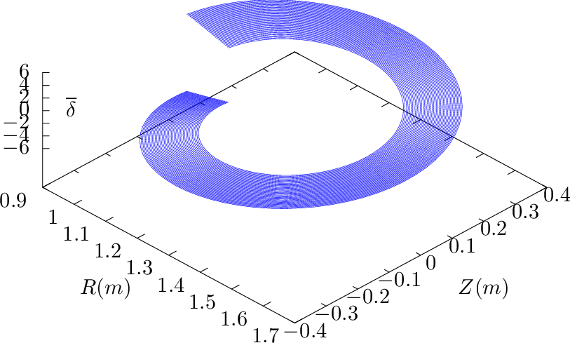
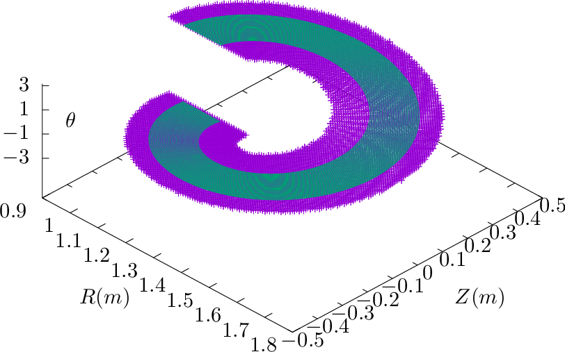 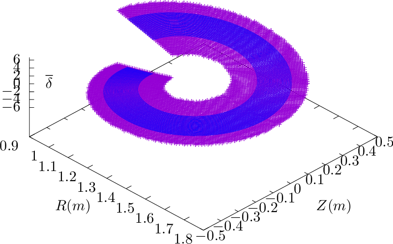
 d𝜃.
d𝜃.